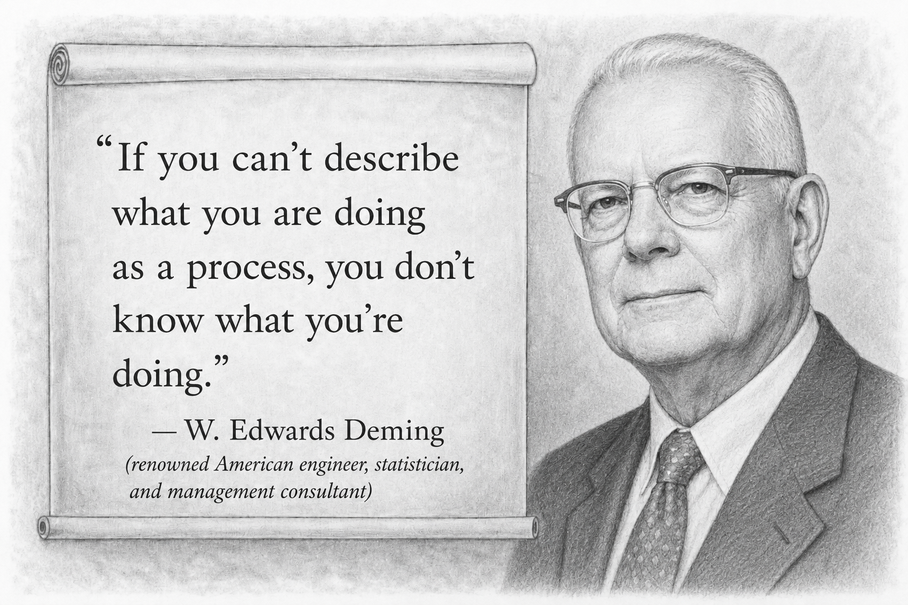
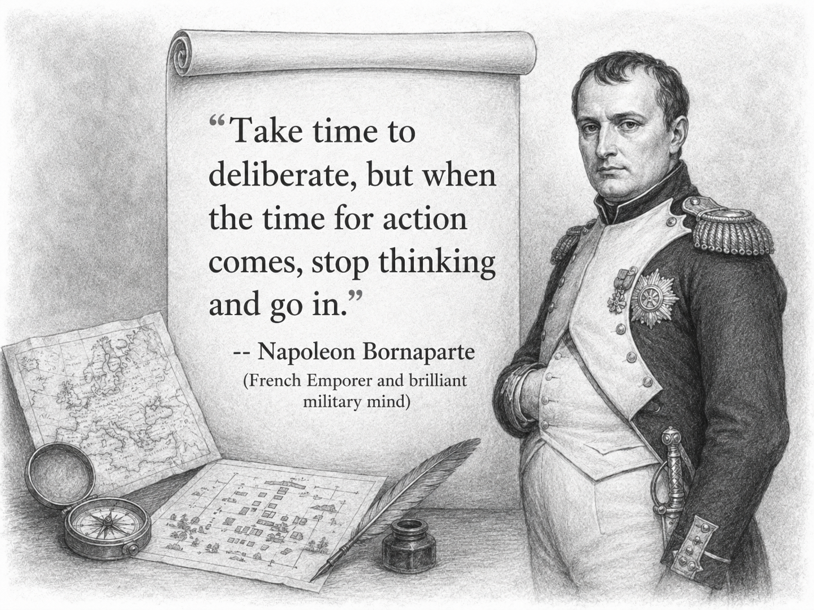

Chapter 3B
Decisions with Chat Completions & Responses APIs
 Workshop (AI Extensions) - Decisions with Chat Completions & Responses APIs
Workshop (AI Extensions) - Decisions with Chat Completions & Responses APIs
Decision Intelligence applied in this module:
- Introduces the OpenAI Chat Completions API & Responses API as LLM AI interfaces
- Chat Completions: Composing decisions with system and instruction prompts. Listing of various decision-making frameworks and with their descriptions
- Chat Completions: Crafting a multi-turn decision scenario
- Chat Completions: Inspecting the gathered intelligence (chat history)
OpenAI offers two main APIs for building with its models: Chat Completions and the Responses API. Chat Completions is the established interface for sending conversational messages and receiving model-generated replies, making it useful for chatbots, assistants, and straightforward text generation workflows. The Responses API is the newer, more flexible interface designed to support modern AI applications, including multimodal inputs, structured outputs, tool use, and stateful interactions.
Chat Completions commonly provides:
- Message-based chat interactions using roles like system, user, and assistant
- Stateless requests by default; your application sends prior messages each turn
- Full control over what conversation history and context the model receives
- Broad compatibility with existing OpenAI chat-based implementations
Responses API commonly provides:
- A unified interface for text, multimodal inputs, tools, and structured outputs
- Built-in stateful context using store: true and prior response chaining
- Easier multi-turn interactions without always resending the full message history
- Better support for deeper reasoning models (GPT-5.4+)
In this module, the Microsoft Extensions for AI (MEAI) ability to create a Chat experience will be introduced. This is a much richer experience than just sending simple prompts that are stateless and context is forgotten in subsequent requests.
MEAI has first-class support for chat scenarios, where the user talks back and forth with the LLM, the arguments get populated with the history of the conversation. During each new run of the decision chats, the arguments will be provided to the AI with content. This allows the LLM to know the historical context of the conversation.
Step 1 - Initialize Configuration Builder & Build the AI Orchestration¶
Execute the next two cells to:
- Use the Configuration Builder to load the API secrets.
- Use the API configuration to build the ChatCompletions orchestrator.
// Import the required NuGet configuration packages
#r "nuget: Microsoft.Extensions.Configuration, 10.0.12"
#r "nuget: Microsoft.Extensions.Configuration.Json, 10.0.12"
#r "nuget: System.Text.Json, 10.0.12"
using Microsoft.Extensions.Configuration.Json;
using Microsoft.Extensions.Configuration;
using System.IO;
using System;
// Load the configuration settings from the local.settings.json and secrets.settings.json files
// The secrets.settings.json file is used to store sensitive information such as API keys
var configurationBuilder = new ConfigurationBuilder()
.SetBasePath(Directory.GetCurrentDirectory())
.AddJsonFile("local.settings.json", optional: true, reloadOnChange: true)
.AddJsonFile("secrets.settings.json", optional: true, reloadOnChange: true);
var config = configurationBuilder.Build();
// IMPORTANT: You ONLY NEED either Azure OpenAI or OpenAI connection info, not both.
// Azure OpenAI Connection Info
var azureOpenAIEndpoint = config["AzureOpenAI:Endpoint"];
var azureOpenAIAPIKey = config["AzureOpenAI:APIKey"];
var azureOpenAIModelDeploymentName = config["AzureOpenAI:ModelDeploymentName"];
// OpenAI Connection Info
var openAIAPIKey = config["OpenAI:APIKey"];
var openAIModelId = config["OpenAI:ModelId"];
// AzureOpenAI or OpenAI selection flag
var useAzureOpenAI = bool.Parse(config["AzureOpenAI:UseAzureOpenAI"] ?? "true");
// Import the Microsoft Extensions AI NuGet Packages
#r "nuget: Microsoft.Extensions.AI, 10.10.0"
#r "nuget: Microsoft.Extensions.AI.Abstractions, 10.10.0"
#r "nuget: Microsoft.Extensions.AI.OpenAI, 10.10.0"
// Import Azure & OpenAI NuGet Packages
#r "nuget: Azure.Identity, 1.21.0"
#r "nuget: OpenAI, 2.13.0"
using Azure;
using Microsoft.Extensions.AI;
using Microsoft.Extensions.Configuration;
using OpenAI;
using System.ClientModel;
using System.ComponentModel;
using System.Text.Json;
// Create the IChatClient based on the selected service
IChatClient chatClient;
// Create a new MEAI ChatClient instance
if (useAzureOpenAI)
{
Console.WriteLine("Using Azure OpenAI Service");
var apiKeyCredential = new ApiKeyCredential(azureOpenAIAPIKey!);
var azureOpenAIClient = new OpenAIClient(
apiKeyCredential,
new OpenAIClientOptions
{
Endpoint = new Uri($"{azureOpenAIEndpoint!.TrimEnd('/')}/openai/v1")
});
chatClient = azureOpenAIClient.GetChatClient(azureOpenAIModelDeploymentName).AsIChatClient();
}
else
{
Console.WriteLine("Using OpenAI Service");
var apiKeyCredential = new ApiKeyCredential(azureOpenAIAPIKey);
var openAIClient = new OpenAIClient(apiKeyCredential);
// #pragma warning disable OPENAI001
chatClient = openAIClient.GetChatClient(openAIModelId).AsIChatClient();
}
Step 2 - Chat Completions: Decisions with Prompt Execution Settings¶

Using the Microsoft Extensions AI ChatCompletion service is very similar to inovoking a prompt for basic LLM interactions. The chat completion service will provide very similar results to invoking the prompt directly.
// Simple prompt to list some decision frameworks this GenAI LLM is familiar with
// LLMs are trained on a diverse range of data and can provide insights on a wide range of topics like decision frameworks
// SLMS (smaller LLMs) are trained on a more specific range of data and may not provide insights on all topics
var simpleDecisionPrompt = """
Provide a list of 5 decision frameworks that can help improve the quality of decisions.
Output Format Instructions:
When generating Markdown, do not use any headings higher than ###.
Avoid # and ## headers. Use only ###, ####, or lower-level headings if necessary.
All top-level section headers should start at ### or lower.
Never use ---, ***, or ___ for horizontal lines. There should be no horizontal lines in the output.
For separation, use extra extra spacing. Do not any render horizontal lines.
""";
// Execute the prompt against the AI model
var simpleDecisionPromptResponse = await chatClient.GetResponseAsync(simpleDecisionPrompt);
var simpleDecisionPromptResponseText = simpleDecisionPromptResponse.Text;
// Display the response string as Markdown
simpleDecisionPromptResponseText.DisplayAs("text/markdown");
Step 3 - Chat Completions: Decision Chat with a System Prompt & Chat History¶
In the previous examples, simple decision prompts were used. In more sophisticated scenarios, a conversational history and state is required to be maintained. The Chat Completions API definition includes mechanisms to maintain state.
Microsoft Extensions for AI includes a ChatHistory object that can be used with the ChatCompletionService to provide historical chat context to the LLM. Notice that the ChatHistory object differentiates between the different types of chat messages:
- System Message - System or MetaPrompt. These are usually global instructions that set the "overall rules" for interacting with the LLMs.
- User Message - A message from the user
- Assistant Message - A message from the LLM. This is a message generated from an assistant or an agent.
Identifying the messages from which role (user) it came from can help the LLM improve its own reasoning and decision responses. This is a more sophisticated approach than passing chat history in a long dynamic string. ChatHistory objects can be serialized and persisted into databases as well. This allows a system architect to load chat history dynamically, branch history conversations, re-run or simulate different conversation paths. For decision scenarios, these tools are super helpful.
// Set the overall system prompt to behave like a decision intelligence assistant (persona)
var systemPrompt = """
You are a Decision Intelligence assistant.
Assist the user in exploring options, reasoning through decisions, problem-solving, and applying systems thinking to various scenarios.
Provide structured, logical, and comprehensive advice.
Output Format Instructions:
When generating Markdown, do not use any headings higher than ###.
Avoid # and ## headers. Use only ###, ####, or lower-level headings if necessary.
All top-level section headers should start at ### or lower.
Never use ---, ***, or ___ for horizontal lines. There should be no horizontal lines in the output.
For separation, use extra extra spacing. Do not any render horizontal lines.
Format the response using only a Markdown table. Only return a Markdown table.
Do not enclose the table in triple backticks.
""";
// Simple instruction prompt to list 5 (five) decision frameworks this GenAI LLM is familiar with
var simpleDecisionPrompt = """
Provide five Decision Frameworks that can help improve the quality of decisions.
""";
// Create a new chat history object with proper system and user message roles
var chatMessages = new List<ChatMessage>();
// Add system and user messages to the chat history
var systemMessage = new ChatMessage(ChatRole.System, systemPrompt);
var userMessage = new ChatMessage(ChatRole.User, simpleDecisionPrompt);
chatMessages.Add(systemMessage);
chatMessages.Add(userMessage);
// Execute the chat messages against the AI model
var chatHistoryResponse = await chatClient.GetResponseAsync(chatMessages);
var chatHistoryResponseText = chatHistoryResponse.Text;
// Display the response string as Markdown
chatHistoryResponseText.DisplayAs("text/markdown");
// Capture the Assistant response and add it to the chat history
// This will persist the full conversation for future interactions
var assistantChatMessage = new ChatMessage(ChatRole.Assistant, chatHistoryResponseText);
In the next step, an additional prompt instruction will be added to the chat history. From the 5 decision frameworks provided in the chat history, Generative AI is asked to recommed a decision framework best suited for the militaty intelligence community. Notice that the previous chat history is automatically provided to provide additional intelligence context.

// Add the assistant message to the decisoin chat history
chatMessages.Add(assistantChatMessage);
// Note: No reference is made to what previous frameworks were listed.
// Note: Previous context is maintained by the MEAI ChatHistory object
var simpleDecisionPromptFollowupQuestionPartTwo = """
Which of the 5 decision frameworks listed above is best suited for the military intelligence community?
Think carefully step by step about what decision frameworks are needed to answer the query.
Select only the single best framework.
""";
// Add User message to the chat history
var userFollowupChatMessage = new ChatMessage(ChatRole.User, simpleDecisionPromptFollowupQuestionPartTwo);
chatMessages.Add(userFollowupChatMessage);
// Execute the chat messages against the AI model
var chatHistoryResponseMilitaryIntelligence = await chatClient.GetResponseAsync(chatMessages);
var chatHistoryResponseMilitaryIntelligenceText = chatHistoryResponseMilitaryIntelligence.Text;
// Display the response string as Markdown
chatHistoryResponseMilitaryIntelligenceText.DisplayAs("text/markdown");
Step 4 - Chat Completions: Decision Conversation with a Multi-Turn Conversation Scenario¶
The list of Chat Messages persists the state. This allows for natural converations between the user and AI to be persisted for future use. It can be saved for future reference, it can be replayed, it can be forked in certain spots to try different scenarios, it can be used as a starting point for other conversations etc.
In the scenario below, let's build a multi-turn conversation about a decision over a purchase for a fitness tracker. Notice that each turn the appropriate Chat History roles are populated with the appropriate User prompts and assistant (AI) responses. This in effect acts as the Gathering Intelligence step of the Decision Intelligence framework as the conversation information has been persisted and can be re-used as context for the decision scenario.
// Set the overall system prompt to behave like a decision intelligence assistant (persona)
var systemPromptDecisionConversation = """
You are a Decision Intelligence assistant.
Assist the user in exploring options, reasoning through decisions, problem-solving, and applying systems thinking to various scenarios.
Provide structured, logical, and comprehensive advice.
""";
// User prompt to start a decision conversation about buying a fitness tracker
var userPromptDecisionConversationTurn1 = """
I am considering buying a fitness tracker but I am not sure which features really matter.
Could you explain the main considerations?
""";
var assistantResponseDecisionConversationTurn1 = """
Absolutely! Key considerations for choosing a fitness tracker often include:
- Fitness Features (e.g., step counting, heart-rate monitoring, workout tracking)
- Health Monitoring (like sleep tracking or advanced ECG capabilities)
- Battery Life
- Comfort and Fit
- Compatibility with your smartphone's operating system
- Price Range
- Knowing which of these you value most will help narrow down your options.
""";
var userPromptDecisionConversationTurn2 = """
Got it. Battery life and sleep tracking are both important to me.
What's a typical battery life range for trackers, and how good is their sleep tracking?
""";
var assistantResponseDecisionConversationTurn2 = """
Different fitness trackers have varying battery lives, typically anywhere from 2-3 days (for more feature-rich or bright-display devices)
up to about 10-14 days (for more minimalist trackers).
Regarding sleep tracking:
- Many modern devices can track different sleep stages (light, deep, REM).
- High-end devices even track breathing rate and oxygen saturation during the night.
- Some also offer insights about sleep quality and tips for improvement.
If battery life is a priority, you may want to consider trackers with a more conservative display and fewer power-hungry features.
""";
var userPromptDecisionConversationTurn3 = """
Are there any popular models you would recommend for that balance of battery life and sleep tracking?
""";
var assistantResponseDecisionConversationTurn3 = """
Popular options that strike a balance between robust sleep tracking and good battery life include:
- Fitbit Inspire 3 or Fitbit Charge 5: Both have solid sleep tracking, multi-day battery, and strong app support.
- Garmin Vivosmart 5: Offers decent fitness and sleep insights, plus better-than-average battery life.
- Xiaomi Mi Band 7: Budget-friendly, surprisingly robust health metrics, and a long-lasting battery.
Each varies in price and features, so consider your budget and the specific metrics you’d like to track.
""";
var userPromptDecisionConversationTurn4 = """
That is great infor.
I also have a friend who said I should consider an Apple Watch.
Does that have comparable battery life and sleep tracking?
""";
var assistantResponseDecisionConversationTurn4 = """
The Apple Watch is known for its extensive feature set, including advanced health monitoring,
but its battery life tends to be shorter—usually around 18-24 hours on a single charge
(or possibly a bit more in low-power mode). While its sleep tracking features have improved over time,
you might find you need to charge it daily or almost daily, which could conflict with your goal of 24/7 tracking.
""";
// Create a new chat history with a multi-turn conversation about buying a fitness tracker
// Notice how the conversation flow uses different roles (user and assistant) to simulate a realistic decision-making dialogue
var chatHistoryMessages = new List<ChatMessage>();
chatHistoryMessages.Add(new ChatMessage(ChatRole.System, systemPromptDecisionConversation));
chatHistoryMessages.Add(new ChatMessage(ChatRole.User, userPromptDecisionConversationTurn1));
chatHistoryMessages.Add(new ChatMessage(ChatRole.Assistant, assistantResponseDecisionConversationTurn1));
chatHistoryMessages.Add(new ChatMessage(ChatRole.User, userPromptDecisionConversationTurn2));
chatHistoryMessages.Add(new ChatMessage(ChatRole.Assistant, assistantResponseDecisionConversationTurn2));
chatHistoryMessages.Add(new ChatMessage(ChatRole.User, userPromptDecisionConversationTurn3));
chatHistoryMessages.Add(new ChatMessage(ChatRole.Assistant, assistantResponseDecisionConversationTurn3));
chatHistoryMessages.Add(new ChatMessage(ChatRole.User, userPromptDecisionConversationTurn4));
chatHistoryMessages.Add(new ChatMessage(ChatRole.Assistant, assistantResponseDecisionConversationTurn4));
Using the above conversation history as the "Gathered Intelligence" betweeen the user and the AI assistant, let's make a final decision and ask for final feedback and a decision evaluation. This "Gathered Intelligence" for the decision can be persisted, re-loaded, simulated multiple times, applied to different AI systems to optimize decisions further.
var userPromptDecisionConversationFinalDecision = """
Thank you for all of that information, I think I'll go with a Fitbit.
The Fitbit Inspire 3 seems like a good fit for my budget and needs.
Any quick final thoughts or insights on my decision?
""";
// Add User message to the chat history
chatHistoryMessages.Add(new ChatMessage(ChatRole.User, userPromptDecisionConversationFinalDecision));
// Execute the chat messages against the AI model
var fitnessTrackerResponse = await chatClient.GetResponseAsync(chatHistoryMessages);
var fitnessTrackerResponseText = fitnessTrackerResponse.Text;
// Add the response to the chat history (Chat Messages)
chatHistoryMessages.Add(new ChatMessage(ChatRole.Assistant, fitnessTrackerResponseText));
// Display the response string as Markdown
fitnessTrackerResponseText.DisplayAs("text/markdown");
Step 5 - Chat Completions: Inspect & Optimize Gathered Intelligence of Chat Completion History¶
The ChatMessage list is a transparent construct that can be inspected and written out. Because it is a simple list, the chat messages object can be manipulated to replay chats from middle interactions to simulate different outcomes.
Execute the cell below to write out entire decision conversation.
📝 Note: In the Decision Intelligence framework, chat history can serve as a form of gathered intelligence. Interactions among users, AI models, processes, and agents provide valuable context for effective decision-making. It’s highly recommended to persist chat history objects (agent threads), especially during decision optimization, to ensure critical information is retained and accessible.
// Print the number of chat interactions and the chat history (turns)
Console.WriteLine("Number of decision chat interactions: " + chatHistoryMessages.Count());
// Change this to a string builder and show as markdown
var stringBuilderChatHistory = new StringBuilder();
foreach (var message in chatHistoryMessages)
{
// add a new line for each message
stringBuilderChatHistory.AppendLine($"**{message.Role.ToString().ToUpper()}**:");
stringBuilderChatHistory.Append($"{message.Text.Replace("#", string.Empty)}");
stringBuilderChatHistory.AppendLine("\n");
}
// Display the chat history as Markdown
stringBuilderChatHistory.ToString().DisplayAs("text/markdown");
By persisting the Decision Intelligence chats and making them available for inspection, can further help the decision-making process. For example you can load the Chat History summarize it or even have AI recommend optimizations for it based on the conversation.
📝 Note: The process below is simplified to illustrate the power of Gathering Intelligence with user <--> AI interactions. More advanced best practices will be introduced in further sections.
var userPromptSummarizeTheDecisionChat = """
Briefly summarize the chat conversation about buying a fitness tracker.
""";
chatHistoryMessages.Add(new ChatMessage(ChatRole.User, userPromptSummarizeTheDecisionChat));
// Execute the chat messages against the AI model
var fitnessTrackerDecisionSummaryResponse = await chatClient.GetResponseAsync(chatHistoryMessages);
var fitnessTrackerDecisionSummaryResponseText = fitnessTrackerDecisionSummaryResponse.Text;
// Display the response string as Markdown
fitnessTrackerDecisionSummaryResponseText.DisplayAs("text/markdown");
The chat history messsage can further be manipulated by looking at the user to AI interactions and getting feedback for future decision interactions.
// Optimize the chat history for any future decision interactions
// Prompt to look at the chat history and provide recommendations for optimizing decision-making
var userPromptOptimizeTheDecisionChat = """
Based on the chat conversation so far...
Provide some recommendations on how the decision interactions could be optimized for decision-making.
What are some considerations for the AI to help the use make even better decisions?
""";
// Remove the last message to avoid redundancy
chatHistoryMessages.RemoveAt(chatHistoryMessages.Count - 1);
chatHistoryMessages.Add(new ChatMessage(ChatRole.User, userPromptOptimizeTheDecisionChat));
// Execute the chat messages against the AI model
var decisionOptimizationResponse = await chatClient.GetResponseAsync(chatHistoryMessages);
var decisionOptimizationResponseText = decisionOptimizationResponse.Text;
// Display the response string as Markdown
decisionOptimizationResponseText.DisplayAs("text/markdown");